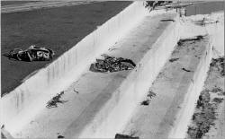

Werner Trieschmann
Holy
Work
(photo by Shannon Frazeur)
Cast
-
MADILYN ó late 40s, black
-
JOHN ó early 20s,
white
-
CARLTON ó
security guard, mid 30s, white
-
JESSE ó late
teens, early 20s, smarter than he's letting on, black
-
LAURA ó early
20s, extremely shy and slightly retarded, white
-
REVEREND MIKE ó
40s to 50s, white
Time
Now
Place
Back room of a bank serving as a process center for the direct mail of
Reverend Mike.
Setting
A small, spare, windowless cinder block room. In the center of the room
is a long, plain table. There are four metal chairs. Two colored
plastic baskets and a letter opener are on the table in front of each
chair. On the floor at one end of the table are bulging bags of mail.
On the opposite end is a wooden stool where CARLTON, the security
guard, sits to watch the employees open the mail. Four hospital gowns
hang on a free standing coat rack. Other elements such as a coffee
pot, security camera, etc. can be suggested or offstage.
Note: Statements such as "cross on the floor" or "money on the
floor" are made to CARLTON so he is aware before employees bend down
to pick up the item off the floor. This is done as a security measure
to make sure employees aren't stuffing bills in their shoes or up
their sleeves, etc.
Also, the business with statements of "cross on the floor" and other
similar statements to CARLTON should not interrupt the flow of the
action. Actors shouldn't pause for these and should let them happen naturally on top of what is already occurring.
*****
MADILYN is sipping a cup
of coffee and looking at the bags of mail. CARLTON, the security guard,
is bent down over the table scratching on three lottery tickets.
MADILYN
I'm going to wear a corsage, a white corsage with carnations. He likes carnations. Did you know that, Carlton?
CARLTON, caught up in
his lottery tickets, doesn't look up.
MADILYN
On TV, he's practically swallowed in white carnations. They stand
out next to his dark blue suits. I've got my dress laid out on the bed.
As soon as we're done here, I'll go home and get ready. So what's the count?
CARLTON
(Still working on his tickets)
Fifteen bags.
MADILYN
Of course we'd have fifteen bags today. And Amanda is out again. I'm gonna really push them. Everybody at the church
can't wait for tonight. He'll have a triumphant return. The civic
center is being prepared with flowers and banners. The choir will sing
his favorite hymns. I'll be on the front row with my dress and corsage.
He'll need our support.
CARLTON
Maybe he'll come here.
MADILYN
No. The office has been trying to reach him all week. He's off alone
somewhere working on his message. But he's knows what goes on this
room.
CARLTON
He does.
MADILYN
Oh yes. He knows about you and me and Jesse and Laura. Nothing gets
by that man. We need to worry about our work and let him worry about
his. That's the best way to please him.
CARLTON
Hey. I won.
MADILYN
No you didn't.
CARLTON
A dollar.
MADILYN
You lost that dollar, Carlton. You handed it to the government.
Pause.
Fifteen. Looks like full bags, too.
CARLTON
(Holding up the scratch ticket)
See. Madilyn, look. Three pots of gold.
MADILYN
You could have sown a faith seed. You could have gone to the civic
center tonight and put that dollar in the collection plate.
CARLTON
I can take this ticket and buy another ticket and win the jackpot.
MADILYN
Ever seen a dog chasing its tail? Circle, circle, circle.
CARLTON
The Reverend has lots of money.
MADILYN
That's right. What's your point?
CARLTON
I like playing.
MADILYN
You reap what you sow, Carlton. You familiar with that Bible lesson?
You want me to tell you what you'll reap with that lottery ticket?
Misery. Lottery winners commit suicide every day.
CARLTON
I'd buy a boat.
MADILYN
You're scratchin' those tickets to get yourself out of here.
Daydreaming. I'm here to tell you that you better pay attention. Are
you listening? You aren't a good listener. Carlton?
CARLTON
Yes ma'am.
MADILYN
Carlton, here's where happiness is. Right here. Workin' this job.
Coming in and having coffee and sittin' down to work. You got a mind to do somethin' else?
CARLTON
No.
MADILYN
Cause if you want to leave, take off. If we're holding you back,
don't hesitate. Let's be honest, it don't take much brains to do what
you do. You know that, right?
CARLTON
I didn't say I didn't like my job.
MADILYN
I can find your replacement before the day is out.
CARLTON
I'm not going anywhere, Madilyn.
MADILYN
Good to hear, Carlton. I guess my attitude about this job is entirely
different from yours. This job saved me from the gutter. The devil
had me with both hands. You know it was God's miracle that I got
here. I came in the bank 'cause I was high and lookin' for a place to
sleep. I walked into this room by mistake and that was it. There were
a couple old ladies opening mail. Chatting, happy. Back then you
could walk right in, believe it or not. They let me sit down and
work. Didn't ask me any questions, didn't want to know where I came
from or where I'dbeen. Just accepted me. Just let a black woman ó a
black junkie, even ó come in. Eight years ago.
CARLTON
It would be a lot better if this room had a window.
MADILYN
This temp they've stuck us with. You're watching him close?
CARLTON
Yeah.
MADILYN
Keep your eye out.
CARLTON
You don't like him?
MADILYN
I don't like it when they make us take these temps.
There is a buzzing sound. MADILYN looks up at a screen above her
head and then punches a button on the wall near the rack of hospital
gowns.
CARLTON
Do you think if they gave us a window we could see the water?
MADILYN
I don't think Amanda is coming back.
CARLTON
The water is right over there.
MADILYN
We're never getting a window. Besides, you can't see the water
from here.
JESSE and LAURA walk in. Having
done this before, they walk over to the wall and grab their hospital
gowns. JESSE empties his pockets of a wallet and keys and hands them to
CARLTON. LAURA puts her backpack down. Both put on gowns, roll up their
sleeves and walk over to the table.
MADILYN
Oooh. This is bad coffee, Carlton. Almost as bad as AA coffee.
MADILYN keeps sipping the coffee.
MADILYN
Good morning, Jesse. Laura, Amanda's baby is sick again.
Ear infection. I told her what to expect. I've never been blessed
with a baby, but even I know they spend their first year at the
doctor. Anyway, we'll have that temp from Arrow, who is already a
little late.
JESSE
How many?
MADILYN
Fifteen. As I'm sure you remember Jesse, tonight the Reverend is at
the civic center. Which means that we can't go late, which means that
I'll have to be on the line. Jesse, are those dark circles under your eyes? (JESSE nods) You
were out late last night. Carousin'. Probably with a girl.
JESSE
I had to study.
MADILYN
We doubt that story, don't we, Laura?
LAURA
Don't ask me.
MADILYN
I know it was a girl.
LAURA
I like Jesse. Jesse James.
MADILYN
Well since you need to wake up, Jesse, why don't you put the mail in
the baskets please? Thank you very much.
JESSE pulls out the mail out of one of the bags and puts piles
in the baskets. As soon as he puts some in LAURA's basket, she starts
to work. She opens the letters, pulls out the paper and the money inside
and puts them in separate piles. Almost every letter she opens has money
in it. When JESSE sits down, he does the same thing.
The buzzing sound goes off and MADILYN looks up at the screen.
MADILYN
Here's our temp. Late.
MADILYN pushes another button and speaks through an intercom
system.
MADILYN
Can I help you?
JOHN
(Off stage)
Yeah. It's John. From Arrow.
MADILYN punches a button and there is another buzz.
MADILYN
I'm just trying to get your blood going today, Jesse. Maybe you'll
think twice about staying out so late.
JOHN SMITHE walks in.
MADILYN
(To JOHN)
Stop right there please.
JOHN
Morning.
MADILYN
Almost good afternoon. Please be aware that we start at 7:30.
JOHN
The bus was . . . yeah, sorry.
MADILYN
Your social security number is?
JOHN
I gave it to you yesterday, didn't I?
MADILYN
Please give me your social security number, John.
JOHN
432961337.
MADILYN
Remember to put empty the contents of your pockets. Any wallet, keys,
combs. Put them here. Didn't I tell you not to wear long sleeve
shirts?
JOHN
You did?
MADILYN
Yes I did. I prefer the men to wear short sleeves so they don't
have to roll them up. Here's your gown.
MADILYN hands JOHN the hospital gown. JOHN starts to put on the
gown but then just stares at LAURA and JESSE who are silently opening
the mail.
LAURA
(To CARLTON)
Cross on the floor.
JESSE
(To CARLTON)
Ten on the floor.
CARLTON nods at LAURA and then JESSE and then they pick up the
items that have fallen out of their envelopes.
MADILYN
John? John? Turn around so I can tie up the gown. (JOHN turns)
Thank you, John.
LAURA
Oops. Cross on the floor.
MADILYN
Now get on the line please. We're already behind.
MADILYN walks to the table and pulls out the two center chairs.
JOHN follows her and sits down.
JESSE
Cross on the floor.
MADILYN
(To JOHN)
Remember to take one envelope, open it with the letter opener and
put the money or checks in one stack and the letter and envelope in
other stack. How many checks did we have yesterday? We never get
many checks. I've been told most of those don't clear the bank.
MADILYN and JOHN start to work. Now they are all opening
envelopes and separating the money from the other materials.
MADILYN
Laura, yesterday you opened the letter with the most money, didn't
you?
LAURA smiles and nods her head.
MADILYN
How much did it have?
LAURA
Seven hundred dollar bills.
JOHN
Did she get to keep it?
MADILYN
Our temps always make that joke and it's never funny. Please keep
your elbows above the table at all times. Remember if something
falls out while you are opening it, you need to tell Carlton.
JESSE
Cross on the floor.
MADILYN
I thought we had gone through the batch with the crosses in them.
They have a mind to fall out.
Now JOHN, MADILYN, JESSE and LAURA are opening mail. There is a
moment where they do nothing but rip into envelopes and separate the
contents.
MADILYN
Laura, I'm worried about Amanda. (To JOHN) One of our regulars on
the line ó the one you're replacing ó has a sick baby.
JOHN has stopped opening and is reading a letter in one of his
envelopes.
LAURA
I miss Amanda. Amanda banana.
MADILYN
(To LAURA)
But she didn't think about the consequences. Now she's in a tough
spot. If she can't make it to work, I'm gonna have to let her go.
LAURA
She has to feed her baby.
MADILYN
(Noticing that JOHN is not opening mail)
John, please don't read the letters. We don't have time.
JOHN gets up from his chair and walks out in front of the table.
He is holding the letter in his hand. He reads the letter directly to
the audience.
JOHN
Rev. Mike I wrote you five times ó
MADILYN
(To LAURA)
I know Amanda has to feed her baby. But do you understand that that's
no help to me? To us?
JOHN
(Standing and reading)
ó I didn't get no answer. You forgot me like the Lord has Rev.
Mike. I'm down on Claim street in apartment number 45.
MADILYN
You have to be ready for a baby. When you have a baby, that's your
one and only job. You can't do anything else.
JOHN
My husband hits me and my baby is lost on drugs.
LAURA
Babies smell good.
JOHN
He's lost, Rev. Mike. All I got for you this time is three dollars.
MADILYN
Laura, you have to watch out. You think you'd be getting a gift
from God but it would be from the devil instead.
JOHN
(Reading another letter)
Rev. Mike I wrote to you in jail, but I didn't hear nothin' from you.
I told you about bein' hit and you didn't say nothin'.
MADILYN
You got security with this job. You can have a baby and then lose
everything else.
JOHN
(Reading another letter)
I got shot in the back and can't work. The police don't care nothin'
'bout me. Rev. I need money. Can you send me some?
MADILYN
I'm sure your mother would be quite upset. Do you remember what
she told you about being a special girl?
LAURA
She had two babies.
JOHN
Everyday I watch you on TV. My TV is broke now. Pray for me for a
new TV. I'm giving you ten dollars. I also want a new car too.
MADILYN
John. John.
JOHN
Yes?
MADILYN
What did I say to you about reading the letters?
JOHN
Well, I . . . this woman ó
MADILYN
If it happens again, I will send you home and won't sign your temp
card.
JOHN returns to his seat and starts to open mail.
MADILYN
Carlton, can you get us some more mail please? Thank you.
CARLTON reluctantly gets up and starts to distribute the
mail.
MADILYN
The crosses aren't as bad as the prayer rugs. Remember those,
Jesse? Reverend Mike sometimes sends out little square prayer
rugs and they fall out all the time.
CARLTON picks out of the mailbag a red brick with an
envelope stuck to the top.
MADILYN
Laura, I'm going to pick you up at six tonight so we can get a good
seat. So please be sure you're ready by six.
CARLTON
(Giving the brick to MADILYN)
Another one.
MADILYN
Oh dear. (To LAURA) I want to be right in front so we don't miss a
thing.
JOHN
What's that?
MADILYN
That is some ignorant soul's idea of being clever. They put our
return envelope on top of a brick so we have to pay for postage.
JESSE
Cross on the floor.
MADILYN
We get about three or four of these a month. Some of them cut up
other mail and send it back to us. Some put dirt, food in the
envelope.
JESSE
Yeah, remember those baby snakes!
LAURA
Gross, gross.
JESSE
Made Madilyn jump out of her seat! One of 'em was still alive!
MADILYN
They were worms, Jesse. The world is full of sad, sick people.
Looks like we're making progress. What do you think, Carlton? Is
this another five or six hours of work?
CARLTON
I'd say five. Jesse is going fast.
MADILYN
(Standing and stretching)
Yes he is. Thank you for your hard work, Jesse. So can Laura and
I pick you up to go hear the Reverend tonight? Surely you can take
time away from your books for one night.
JESSE
How long's it gonna be?
MADILYN
Long enough to make a difference. So you'll be ready at six?
(JESSE reluctantly nods his head) What about you, John?
JOHN
I, ah ó
MADILYN
The reverend has a way of cutting right to your heart.
JOHN
I'm busy.
MADILYN
Oh really. Busy with what exactly?
JOHN
Work.
MADILYN
I'm afraid to tell you that once we're done at about four, this
office will be closed.
JOHN
I'm a painter. I've got projects I need to work on.
MADILYN
An artist. That is different, isn't it? What kind of art is it?
JOHN
Self-portraits. My work isn't very commercial, I mean, it doesn't
sell. Obviously.
MADILYN
I've often thought we could use some art in this room. We don't
have any windows. It would be nice to have a painting in here,
wouldn't it, Carlton?
CARLTON
Yeah. A painting of a boat.
MADILYN
Carlton. I'm thinking we need a painting of the Reverend. A nice
big portrait of him in his dark blue suit. That would be something.
And I don't think it would be too distracting.
JOHN
That's not the kind of paintings I do.
MADILYN
You'll come tonight, John, and see the Reverend up close. That'll
help you get an idea of what he looks like. But you've probably
seen him on TV.
JOHN
He hasn't been on lately.
MADILYN
You'll come tonight so it will help you with your painting. These
baskets are getting full, Carlton, will you please empty them, thank
you.
CARLTON picks up the baskets with envelopes and walks off
stage.
MADILYN
Wait until you see the Reverend in person, John. It's like ...
electricity. You can feel as soon as he steps into the room. And
his voice and even the way he stands and stares.
LAURA
Cross on the floor.
CARLTON walks back in with empty baskets and puts them on
the table.
MADILYN
You know I've been talking to the office and they've been getting
letters from the Reverend. Handwritten letters just like the gospels
that outline his plan for his ministry and for what is going to happen to the world. They say there are amazing revelations in
those letters. That's what we're going to hear about tonight.
He's going to tell us what to expect. You came at just the right
time, John.
JOHN
I'm can't go.
MADILYN
Well, that's your loss, isn't it? Everyone, we're supposed to
take our 15 minute break in five minutes but I'd like to keep on
working. Thank you.
JOHN
(To JESSE)
Why was he in jail?
JESSE
Like I have no idea.
MADILYN
Name me one religious leader who hasn't been in jail.
JOHN
What did he do?
MADILYN
They said they put the Reverend in jail for a number of reasons.
Of course they always have reasons to jail believers. I read about it but I knew it wasn't the whole truth.
JOHN
Did it have something to do with this money?
MADILYN
John, please keep opening mail.
JESSE
Money on the floor.
JOHN
He's a televangelist. All this money, all this cash, it's going to
the Reverend.
MADILYN
It's going to his ministry.
JOHN
What kind of ministry could he have? He's been to jail.
MADILYN
Jesse, Laura, stop for a moment please. Jesse, stop. Thank you.
JESSE
Man, we're never gonna get done.
JESSE and LAURA stop opening mail.
MADILYN
Here's one of the Reverend's ministries. Here's Jesse and Laura
and Carlton. Here I am. We're happy the Reverend is sending out
mail. That keeps us off the streets. That means we have beds and food. Isn't that right?
JOHN
But don't you read the letters?
MADILYN
The Reverend is a man of God and been quite good to us. He has kept
his faith with us and we'll keep our faith with him. This is a
family. Laura, you couldn't work anywhere else, could you?
LAURA
Madilyn. Don't talk about me.
MADILYN
John, we don't have time for this today. You were told when you
took this job that you would be working for an evangelical
organization.
JOHN
Right, but I didn't ó
MADILYN
You worked here yesterday and saw what went on. You could have
stayed home but you didn't.
JOHN
This was the only temp job left. If I don't work, I've got to leave
the city and go home.
MADILYN
Are you staying? What's your answer, John?
JOHN
There's nothing else.
MADILYN
All right. Step out here.
MADILYN steps out in front of the table.
MADILYN
Come here, John.
JOHN steps out in front of the table.
MADILYN
Carlton, search him.
CARLTON
I've watched him. He's clean.
JOHN
I didn't take anything.
MADILYN
How do we know all this talk hasn't been his way of distracting us?
Search him. (To JESSE, LAURA) OK, go ahead.
JESSE and LAURA go back to opening envelopes.
CARLTON
Put your arms out.
JOHN puts his arms out and CARLTON starts patting him
down.
MADILYN
You believe in the Lord? Are you a Christian?
JOHN doesn't answer.
MADILYN
You are. You can't hide it. So what's wrong with this work? You
don't think they're doing the same thing in the Catholic church? Or in the Methodist church? You made your choice yesterday.
CARLTON
Told ya. He's got nothin'.
MADILYN
All right. Thank you, Carlton.
MADILYN walks back and sits down at the table.
MADILYN
Come on, John. Let's finish.
JOHN hesitates for a moment and then returns to the
table.
He starts to open up envelopes. There is a moment when
everybody is silently working.
MADILYN
Carlton, I'm in the mood for more coffee. Would you make some
please? Thank you.
Laura, do you have a dress for tonight? (LAURA shakes her head
yes) I do too. I have a carnation corsage I'm going to wear. I know
the Reverend will notice. You can't get anything past that man. He
sees and knows all.
JOHN
(To CARLTON)
What did you do with the letters?
LAURA
(Holding out a large stack of money she's just
pulled out of an envelope)
Madilyn. Look, look!
CARLTON
(To JOHN)
Dumpster.
MADILYN
Laura, how much have you . . . good Lord . . .
LAURA
One hundred . . . two hundred . . . three hundred . . .
MADILYN
Save that letter. We've got to send that to the office.
JESSE
(Now holding up an envelope with money)
Madilyn. Carlton. Here's five hundred!
The buzzer goes off.
MARILYN
(Now holding up her own wad of cash)
Look at this! I've got two hundred here.
LAURA
. . . eight hundred . . . nine hundred . . . one thousand.
MADILYN
This is a good day for the office.
The buzzer goes off again. Everybody stops.
MADILYN
Well, who . . . Carlton? Are we expecting . . .
MARILYN walks over to the screen.
MADILYN
(Stunned)
I can't . . .
MADILYN punches the buzzer. REVEREND MIKE, who is
wearing a suit but looks nervous and exhausted, walks
in.
MADILYN
Reverend Mike. Nobody from the office told me. They didn't say a
thing. This is amazing. Praise the Lord. We just do our work and
never need any thanks.
REVEREND MIKE starts to look around. He goes over to
the hospital gowns.
MADILYN
I'm Madilyn Grange, the supervisor. Those are our gowns, for
security and you can see everybody wears one. That's our
security guard, Carlton. Oh sorry, I'm nervous. You don't know
what this means to me. You've saved my life. You did. We could
have put up a banner. I'll be at the civic center tonight.
REVEREND MIKE walks over to the table. He looks at the
letters and the money.
MADILYN
This is Jesse and Laura. They've been with us for about two years
now. Right before you came in, they opened envelopes with fifteen
hundred dollars.
JOHN
(To REV. MIKE)
This is ó
MADILYN
That's John, he's our temp because one of our regulars has a sick
child. You don't know what this means.
REV MIKE
I've been walkin' . . .
MADILYN
You look worn out, Reverend. You want to sit down for moment.
REV. MIKE
. . . around the city . . . in a circle . . .
MADILYN
We've had quite a morning already.
JOHN
(To REV. MIKE)
Have you seen these letters?
MADILYN
As soon as we're done, the whole office is going to civic center.
JOHN
They're illiterate. They're sending in their life savings.
MADILYN
John. Please be quiet. The Reverend understands what's in the
letters.
JOHN
Did they send them to you when you were in jail?
REV. MIKE takes one of the piles and throws it on the
floor.
REV. MIKE
No! No!
REV. MIKE picks up the table and throws it down on the
floor. Money and envelopes fly.
REV. MIKE
No more! No more of this work! No more of this work.
JOHN
Cross on the floor.
MADILYN
The office didn't inform me ó
REV. MIKE
The office? I'm the office! My name on the letters. My face . . .
no more money changers. Forgive me. Shut this down.
MADILYN
(Down on the floor
frantically picking up envelopes)
Reverend. We can't . . . just stop. We have bags left. We can't ó
REV. MIKE
Stop it. Stop it! Are you listening? What's your name?
MADILYN doesn't respond.
REV. MIKE
What's your name? What's her name?
MADILYN
I know you know me. I know the office has told you about me.
REV. MIKE
(To JOHN)
You. Terminate the lease. Return this mail. You'll do it?
JOHN
I'm just a temp.
REV. MIKE
So is this. I let it get out of hand. I thought . . . no more. God
forgive me.
REV. MIKE walks out. Everybody stands still for a
moment. JESSE starts look for the money. When he
finds some, he stuffs it in his pockets.
MADILYN
Jesse. Jesse. Let's put this back together. We've got ten bags left
to . . . . Jesse, that's not yours. Carlton.
CARLTON now is doing the same thing. LAURA is also
picking up money.
CARLTON
Jesse, start going through those bags. You, me, Laura gonna split
it even.
JESSE
Just like Christmas.
LAURA
(Laughing)
Baby shoes. Baby clothes.
Powerless, MADILYN and JOHN watch them grab the money.
JOHN
Madilyn. Will you sign my temp card?
Lights dim to black.
THE END
|
 ‚Üê Back to MarckBeggs.com | Arkansas Literary Forum archive, preserved as originally published
‚Üê Back to MarckBeggs.com | Arkansas Literary Forum archive, preserved as originally published{kind=link}